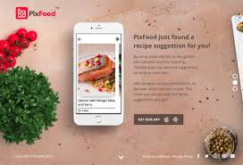

Projects
GHUMANTU
A CRUD web application based on microservice architecture for online ticket booking for over 150 cultural and heritage sites in India.
- Managed the security part using concepts of Auth Service, JWT token, reverse proxy by API gateway, etc.
- Enhanced user engagement and improved overall user experience across the platform.
React
Springboot
Tailwind CSS
PostgreSql
Toxic Comment Classifier
An application that detects toxic and vulgar comments in a document that can be used for further processing.
- To build a model thats capable of detecting different types of toxicity. like threats, obscenity, insults, and identity-based hate, achieving an accuracy of over 85%..
- Used a machine learning algorithm to identify toxic comments and flag them for removal.
Python
Machine learning
Deep Learning
Visualization

Meal Recommendation System
A smart food recommendation system based on the macronutrients provided by the user like carbs, proteins and fats
- Applied K-means algorithm to group the dataset based on similarity score.(Protein dominated, carbs dominated and neutral)
- Implemented some rule based techniques and constraints to find combinations and select the best one based on input variables.
- Maintained score variable to find deviation from target, applied DBScan and Hierarchial clustering to find best model.
Python
Machine learning
Statistics and rule based
Data Visualization